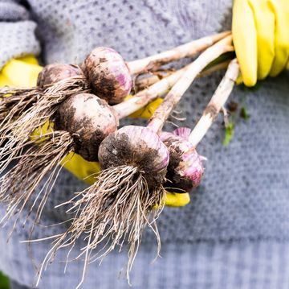
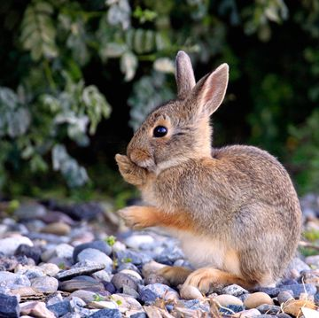
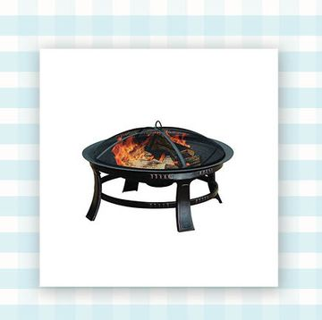

GARDENING
How does your garden grow? Make sure your yard looks its best with our garden plans, expert gardening tips, landscaping advice, outdoor decorating ideas, and inspirational garden tours.
How does your garden grow? Make sure your yard looks its best with our garden plans, expert gardening tips, landscaping advice, outdoor decorating ideas, and inspirational garden tours.

These Garden Layouts Will Suit Spaces of All Sizes
18 Types of Winter and Summer Squash to Cook With
The Best Types of Cactus to Grow Indoors
Thanksgiving vs Christmas Cactus Differences
How to Water and Care for Your Prayer Plant
35 Best Fall Flowers to Plant in Your Garden
Heres How and When to Plant Garlic
Plant These Bulbs in Fall for Spring Color
20 Best Flowering Vines to Add to You yard
The Easy Guid to Lucky Bamboo Plant Care
20+ Best Indoor Plants to Brighten Your Home
Easy Guid to Monstera Plant Care
11 Types of Dogwood Trees and Shrubs for Any Yard
Avoiding the Dangers of Giant Hogweed
How to Take Care of Your Indoor Maidenhair Ferns
How to Care for Your Pink Princess Philodendron
Here's An Easy Recipe for Himmingbird Food
30 Veggies and Herbs for a Fall Vegetable Garden
Here's How to Add Wildflowers to Any Garden
How to Get Rid of a Ladybug Infestation
21 Gorgeous outdoor Kitchen Ideas
What Is Poison Hemlock and How Do I Get Rid of It?
15 Low Light Houseplants to Grow Anywhere Indoors
Here Are the Best Trees For Fall Color
33 Common Types of Weeds & How to Treat Them
How to Keep Rabbits Out of Your Garden
Here's What to Do About The Spotted Lanternfly
Easy-to-Use Outdoor Raised Garden Beds
Cozy Up to Cooler Weather with These Fire Pits
Charming Fall Porch Decor for Any Home
9 Best Outdoor String Lights
A Party-Ready Outdoor Kitchen from Home Town Stars
Upgrade Your Summer With These Outdoor Showers
The Best Outdoor Rugs on Amazon Are All Under $100
20 Best Backyard Chicken Coops
The Best Outdoor Furniture at Walmart of 2023
Easy Summer Crafts for DIY Lovers
Make your backyard Magical with Outdoor Lighting
The Best Outdoor Rugs to Upgrade Your Patio
28 Easy DIY Small Backyard Ideas

The Best Patio Furniture Deals From Wayfair
7 Best Outdoor Rocking Chairs 2023
Amazon Fire Pit Sale
40 Beautiful Colors to Paint Your Front Door
25 Ground Cover Flowers for Your Backyard
Creative Vertical Garden Ideas for Small Spaces
How to Buil the Ultimate Chicken Coop
12 Teeny-Tiny Teacup Fairy Gardens We Love
How to Get Rid of Chimpmunks Without Harming Them
The Truth Behind the Viral "3-Hour Warning"
Beautiful Flowers that Attract Hummingbirds
Flowering plants that Attract Bees
How to Keep Pumpkins from Rotting
Here's How to Plant Grape Vines
How to Treat a Spongy Moth Caterpillar Infestation
How to Grow and Care for Hardy Hibiscus
30 Best Plants and Accessories From Amazon
16 Artifical Flowers That Look So Realistic
30 Deer-Resistatn Plants Bambi Wont Go Near
How to Get Rid of Mosquitoes in Your Lawn or Yard